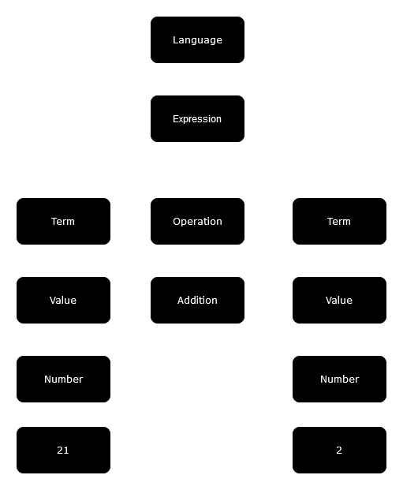

2024-08-01 10:33
Language interpreter from scratch in Rust: Part 1 of many
Creating your own programming language is an exciting and eye-opening experience. As coders, we rarely if ever get a say in how our tools work. Languages like Python, Ruby, C/C++ and even Rust have been around for a while and are used by millions. Therefore, adding a feature we want or removing an annoyance is often a multi-year process that goes nowhere.
Designing your own language however, gives you the freedom to do whatever you want. As you dive deeper into the implementation of your interpreter, you will get to make decisions that impact the users of your language, possibly for decades to come. If nothing else, you will build empathy with other compiler authors and become a more enlightened engineer.
This post is the first in a series that will guide you through designing your own programming language, and an interpreter program that will parse and execute your language.
Quick introduction
All programming languages, from the friendliest ones like Python, to the incomprehensible ones like C++, are built using two independent components: a lexer and a parser. This design pattern has existed for as long as I have been studying computing, so I will take it for granted and use it in this guide.
Where our interpreter will diverge is, instead of compiling our language to assembly, like the C++ compiler would do, or to some custom intermediate “bytecode” like the Python interpreter does, we will execute code directly.
Our interpreter will be written in Rust, so we will not have to worry about memory management or performance (for now), and end up with something that is not just a toy example.
All code examples will also have a Rust Playground link, so you can run and edit them as you follow along.
Without further ado, let’s get started.
Lexer
The lexer takes text and converts it to a list of tokens. A token could be a letter, a word, a number, or a punctuation mark. Tokens have meaning depending on their position in the code, but the lexer will not concern itself with syntax: its only job is to transform text into an allowed list of symbols.
Example
Most programming languages allow its users to do math. Let’s start building our interpreter with a simple arithmetic example, and write a lexer that can handle it.
The code
1 + 2
The job of the lexer is to transform this code into the following tokens:
Number(1), Plus, Number(2)
While you probably think that this program will add one and two together and produce 3, the lexer is not allowed to make assumptions about syntax or what the code will do.
Since we are writing our lexer in Rust, an enum that will represent all allowed tokens in our simple language seems like a good abstraction:
/// List of all available tokens in our language.
#[derive(Debug)]
pub enum Token {
Number(i64),
Plus,
}
This list of tokens is short, but as our language evolves, it will get longer and more interesting. Our language can only add numbers at the moment, but we will add more features later, like control flow with if statements and for loops.
Extracting tokens
At the most basic level, a token is a single character, like the plus sign (+). Our lexer therefore will start processing the source code one character at a time:
pub struct Lexer<'a> {
// Source code.
source: &'a str,
// Resulting list of tokens.
tokens: Vec<Token>,
}
impl<'a> Lexer<'a> {
pub fn new(source: &'a str) -> Lexer {
Lexer {
source,
tokens: Vec::new(),
}
}
/// Extract tokens one character at a time.
pub fn tokens(&mut self) -> Vec<Token> {
for c in self.source.chars() {
// Placeholder for actual lexer logic.
todo!("extract tokens")
}
// Return all tokens, leaving an empty list in their place.
// This allows to parse the same code multiple times
// without creating a new lexer.
std::mem::take(&mut self.tokens)
}
}
Since our language only supports adding numbers, our tokens can only include numbers between 0 and 9, and the + sign:
for c in self.source.chars() {
match c {
// Convert numbers between 0 and 9 to Rust integers.
'0'..='9' => self.tokens.push(
Token::Number(c.to_digit(10).unwrap() as i64)
),
// Convert the plus sign to the plus token.
'+' => self.tokens.push(Token::Plus),
// Error out on unknown characters.
c => todo!("lexer error, unsupported character: '{}'", c),
}
}
While short, this code does quite a bit: it extracts characters from text, maps them to the vocabulary of our language, and produces values that our interpreter can later understand. Since parsing text is handled by the lexer, the rest of our interpreter, namely the parser, can only work with a single enum. This separation of concerns makes compilers (and interpreters) easier to write and maintain.
Testing the lexer
Before writing any more code, we should probably write a simple test to make sure we are on the right track. I am writing this in a Rust binary project, so we can just add this to the main function:
fn main () {
let source = "1 + 2";
let mut lexer = Lexer::new(source);
println!("{:?}", lexer.tokens());
}
This code compiles fine, so let’s try it:
thread 'main' panicked at src/main.rs:38:22:
not yet implemented: lexer error, unsupported character: ' '
If you have done this before, you probably noticed this problem already, but for beginners this may come as a surprise: the space character ( ) is also a token which is part of the language. Therefore, the lexer needs to handle it. We do not have a use for the “space” token yet, so we will ignore it for now:
match c {
// Ignore spaces.
' ' => continue,
'0'..='9' => self.tokens.push(
Token::Number(c.to_digit(10).unwrap() as i64)
),
'+' => self.tokens.push(Token::Plus),
c => todo!("lexer error, unsupported character: '{}'", c),
}
Running our lexer now with support for spaces, we are getting the right result:
[Number(1), Plus, Number(2)]
Multi-character tokens
We are keeping our language simple for now so we can build the entire interpreter in one go, but before we continue to the parser, let’s add support for multi-character numbers. Our language would be pretty silly if it could only count to 9.
Since our lexer reads the code one character at a time, and numbers can be infinitely long, we need to add a buffer to collect digits as we consume them:
pub struct Lexer<'a> {
source: &'a str,
tokens: Vec<Token>,
// Buffer for multi-character tokens.
buffer: String,
}
impl<'a> Lexer<'a> {
/// Process a multi-character token stored in the buffer.
fn process_token(&mut self) {
// Empty buffer means there is nothing to do here.
if self.buffer.is_empty() {
return;
}
// Use the standard library's [`str::parse`]
// to convert text to an integer.
self.tokens.push(
Token::Number(self.buffer.as_str().parse().unwrap())
);
// Clear the buffer for the next token.
self.buffer.clear();
}
}
Now that we handle multi-character numbers, the space character needs to be handled differently. Since space now separates tokens, instead of just ignoring it, we will process whatever is in the buffer:
for c in self.source.chars() {
match c {
// Spaces separate tokens.
' ' => self.process_token(),
// Buffer number characters
// instead of parsing them individually.
'0'..='9' => self.buffer.push(c),
// Everything else remains the same.
'+' => self.tokens.push(Token::Plus),
c => todo!("lexer error, unsupported character: '{}'", c),
}
}
// Don't forget to process whatever is in the buffer
// at the end of the input:
self.process_token();
Let’s add a bigger number to our source code and try the lexer now with actual support for numbers:
let source = "21 + 2";
which produces:
[Number(21), Plus, Number(2)]
This is good enough to handle our simple language. While we may be tempted to add more tokens like if, for, or - to support more features, let’s save that for later. By building the entire interpreter first, using the right abstractions, we will be able to easily add language features later.
Lexer code is available here.
Parser
The parser takes a list (sometimes called a stream) of tokens and produces an Abstract Syntax Tree. The AST, for short, is a structural representation of the code: it organizes tokens in such a way that makes sense in the context of the language rules. Constructing the AST consequently validates that the code is syntactically correct. When writing code in languages like Rust or Python, syntax errors which we are all too familiar with, are typically thrown by the parser.
Before we can build our parser, we need to get a bit more involved in our language design. By understanding a bit of theory, we can build the right abstractions early on, and make our job easier later.
Formal definition
A formal definition is a blueprint of valid language syntax. Its only job is to ensure that tokens are presented in the correct order. It does not explain what those tokens mean or do; while the reader could infer that an if statement controls which part of the code is executed, the language designer could make that statement exit the program instead. Of course, that would be somewhat cruel, but the formal definition we are about to write really does not concern itself with how the interpreter chooses to execute the code.
With that somewhat disturbing knowledge hammered into our minds, let’s write something:
language = expression
expression = term operation term | term
term = value
value = number
operation = '+'
Before trying to understand what this means, let’s throw in some definitions:
| Term | Definition |
|---|---|
| Language | The programming language definition. |
| Expression | Some code which, when executed, produces a single value as a result. |
| Term | A value, either constant (e.g. 21) or variable (source). More on variables later. |
| Operation | An action that combines two terms into one. |
= |
“is a” |
| |
“or a” |
Now that we understand the lexicon a bit better, let’s read our language definition one line at a time. At the top, we have:
language = expression
Our entire language is one expression. Programs written in our language can effectively contain only one line of code. A bit boring, but we will expand this later quite easily.
Moving on to the next line:
expression = term operation term | term
An expression in our language is either a binary operation on two terms, or a single term. For example, our example 21 + 2 is an expression of two terms joined together with a binary operator: the term on the left, 21, is joined using the addition operator (+) to the right term, 2.
Alternatively, if we just typed 21 into our interpreter, by itself that expression would evaluate to 21. It is not immediately obvious why we need single-term expressions, but they will become useful once we will build more complex expressions.
Moving on to the next line:
term = value
A term in our language is a value. This may seem redundant; why not just use value in the expression definition? Later on, we will be adding additional types of terms, like a variable, so it is a good idea to keep our language definition flexible.
Moving down to the next line, the value is expanded to a number:
value = number
Our simple language only allows numbers, but soon enough we will add strings, lists and hashes. We will be able to define operations between values of different types, e.g. addition between a list and a string, and our language will really take form.
Finally, our only operation, addition, is specified on the last line:
operation = '+'
Parsing our example
Now that we have formal definitions, let’s parse our example manually. Our code,
1 + 2
based on our formal language definition, should produce the following AST:

Parsing expressions
Now that we have a formal definition and an example of an AST, let’s parse our example, starting at the bottom:
/// An operation. Only addition currently supported.
#[derive(Debug)]
enum Operation {
Addition,
}
/// A constant value. Currently, only numbers are supported.
#[derive(Debug)]
enum Value {
Number(i64),
}
/// Expression term. Currently, only values are supported.
#[derive(Debug)]
enum Term {
Value(Value),
}
With the basic building blocks of our language ready, let’s define an expression. If we recall the formal definition, an expression can either be a binary operation between two terms, or a just a term:
#[derive(Debug)]
enum Expression {
/// A binary operation.
Binary {
left: Term,
op: Operation,
right: Term,
},
/// Just a term by itself.
Term(Term),
}
That’s not a lot of code given our long theoretical explanation, but that was the goal: as we understood theory, implementing the parser becomes easy.
Parsing tokens
Just like the lexer, a parser processes tokens one at a time. Since our language only has expressions, to have a complete language parser, we just need to implement expression parsing:
use std::iter::Iterator;
impl Expression {
/// Given a stream of tokens, parse a single expression.
pub fn parse(
stream: &mut impl Iterator<Item = Token>
) -> Expression {
// Parse the left term.
let left = Self::term(stream);
// Optionally, parse the operator.
let operation = stream.next();
match operation {
// An operator is present, this is a binary operation.
Some(operation) => {
let op = match operation {
// We only support addition. Throw a syntax error if
// we see anything else.
Token::Plus => Operation::Addition,
_ => panic!(
"syntax error, expected operation, got: {:?}",
operation
),
};
// A binary operation must have two terms. Parse
// the right term or throw an error if it's not there.
let right = Self::term(stream);
Expression::Binary {
left,
op,
right,
}
},
// Expression has no operator, this is just a single term.
None => Expression::Term(left),
}
}
/// Given a stream of tokens, parse a single term.
fn term(
stream: &mut impl Iterator<Item = Token>
) -> Term {
let token = stream.next().expect("expected a token");
match token {
// Convert the number token to a term containing a value.
// No other tokens are supported here, so throw
// a syntax error if another token is there instead.
Token::Number(n) => Term::Value(Value::Number(n)),
_ => panic!("syntax error, expected term, got: {:?}", token),
}
}
}
Testing the parser
Since we have source code and a lexer already, we can add the parser to it pretty easily. Going back to our main function:
fn main () {
let source = "21 + 2";
let mut lexer = Lexer::new(source);
let tokens = lexer.tokens();
let expression = Expression::parse(&mut tokens.into_iter());
println!("{:#?}", expression);
}
which produces:
Binary {
left: Value(
Number(
21,
),
),
op: Addition,
right: Value(
Number(
2,
),
),
}
That looks about right. Let’s recap. We have converted text into tokens, parsed those tokens with our own parser, created an Abstract Syntax Tree, and validated syntax using our formal language definition. That was a lot of work just to add two numbers together, but the payoff is finally here: let’s bring our own interpreter to life by executing our AST.
Source code for the parser is here.
Executor
An executor, unlike a compiler, takes the intermediary representation of the code (the AST) and executes it directly on the machine where the code is read. A compiler, on the other hand, translates the AST into machine code, or another language, which is then executed by either another interpreter or another machine.
For example, if you are familiar with TypeScript, the TypeScript compiler translates TypeScript code into JavaScript, which is then executed by the V8 interpreter. To make things even more interesting, V8 can also act as a compiler, by translating JavaScript into assembly and executing it directly on the CPU. This is called JIT (Just-in-Time) compilation, a topic we will explore at another time.
Since our language is written in Rust, our interpreter will be able to execute code on any machine where Rust is supported. This makes our language pretty flexible, since Rust can run on all Intel, AMD, and ARM CPUs, Linux, Windows and Mac. For example, another popular interpreted language, Python, is actually written in C, which makes it even more portable.
That is enough theory. Let’s get to business of executing code.
Evaluating expressions
Our expressions, currently, only have two variants: binary operation and a single term. Both need to have an execution path, so let’s handle them both in one simple function:
impl Expression {
// Evaluate an expression and produce a single value.
pub fn evaluate(&self) -> Value {
match self {
// Single-term expressions just evaluate to the value
// they are holding.
Expression::Term(Term::Value(value)) => value.clone(),
// Binary operations execute the operation.
Expression::Binary {
left: Term::Value(left),
op,
right: Term::Value(right)
} => {
match op {
// Only addition is currently defined,
// just add the two values together in Rust.
Operation::Addition => left.clone() + right.clone(),
}
},
}
}
}
Looking back at our formal definition, an expression is some code that, when executed, returns a single value. So, the evaluate method takes an expression, and has to return a Value. The first kind of expression, a single term, is easy to execute: it just returns whatever value it is holding.
The binary operation is only slightly more involved. To evaluate it, we take the left side and join it with the right side using the specified operation. Since we currently support only addition, the operation we are implementing is simple: we add the two values together.
Compiling this code, we get a couple errors:
value.clone(),
^^^^^^^^^^^^^ expected `Value`, found `&Value
note: `Value` does not implement `Clone`, so `&Value` was cloned instead
and
cannot add `Value` to `Value`
note: an implementation of `Add` might be missing for `Value`
The first one is easy to fix. Let’s add a Clone implementation to our Value enum:
#[derive(Debug, Clone)]
enum Value {
Number(i64),
}
The second error asks us to explain to the Rust compiler how to add two Value enums together. The idiomatic way to do this in Rust is to implement the std::ops::Add trait, which we can do as follows:
use std::ops::Add;
impl Add for Value {
type Output = Value;
fn add(self, other: Value) -> Value {
match (self, other) {
// A bit of basic math here.
(Value::Number(a), Value::Number(b)) => Value::Number(a + b),
}
}
}
Going back to our main function, let’s evaluate our example:
fn main () {
let source = "21 + 2";
// Parse the code into tokens.
let mut lexer = Lexer::new(source);
let tokens = lexer.tokens();
// Parse the tokens into an AST.
let expression = Expression::parse(&mut tokens.into_iter());
// Execute the AST producing a single value.
let result = expression.evaluate();
println!("{:?}", result);
}
Running our interpreter, we finally get:
Number(23)
That was quite a journey, but we are finally here. With only 175 lines of code, we managed to read text and add two numbers together. Talk about doing things the hard way, but it is definitely more fun and informative than just typing them into a Google search field.
Source code is available here.
Quick recap
Before going further, let’s do a quick recap.
First, we built a lexer, which takes text and converts it to a list of predefined tokens. Second, we wrote a parser which takes that list and converts it to an Abstract Syntax Tree. The parser validates language syntax, and creates an intermediary representation of the source code.
Lastly, we wrote an executor that takes the AST and executes it to produce a single value. Our executor is written in Rust, so it can run our code on any machine supported by the Rust compiler.
This was great and all, but it is hard to see why this was necessary. Well, let’s shake things up and add support for strings.
Adding strings
A string is a sequence of characters, which when interpreted, is represented as a value. For example, "hello world" is a string. How our language represents strings is completely up to us, and as the language designer you get to decide how you want this to work. For example, strings in C are placed between double quotes. Python, on the other hand, allows single, double, and even triple single or double quotes:
'this is a string'"this is also a string"'''this is a multi-line string'''"""this is also a multi-line string"""
To support strings, we will need to make modifications at all three levels of our interpreter: we need to add support for parsing strings to the lexer, for representing strings in the AST in the parser, and finally executing operations on strings in the executor.
Lexer
The lexer gets to decide how strings are represented in code. Our lexer will follow the C string convention and only allow strings between double quotes. First, let’s modify our lexicon to add a string token:
#[derive(Debug)]
pub enum Token {
Number(i64),
Plus,
String(String),
}
With that small modification out of the way, let’s modify the lexer tokens method slightly to handle parsing strings:
impl<'a> Lexer {
pub fn tokens(&mut self) -> Vec<Token> {
// Create an iterator over the source code,
// one character at a time.
let mut chars = self.source.chars();
while let Some(c) = chars.next() {
match c {
// No changes here.
' ' => self.process_token(),
'0'..='9' => self.buffer.push(c),
'+' => self.tokens.push(Token::Plus),
// Double quote indicating the start of a string.
'"' => {
// Buffer a string into its own buffer.
let mut string = String::new();
// Consume from the same iterator,
// moving the lexer forward in the text stream.
while let Some(c) = chars.next() {
match c {
// Closing double quote ends the string.
'"' => break,
_ => string.push(c),
}
}
// We have a complete string.
self.tokens.push(Token::String(string));
}
c => todo!("lexer error, unsupported character: '{}'", c),
}
}
// Don't forget to process whatever is in the buffer.
self.process_token();
// Return the list of tokens, emptying the lexer.
std::mem::take(&mut self.tokens)
}
}
Looks good enough for now. Parsing strings can get more interesting, if you want to support escaping special characters (e.g. \n, the new line character) but for now, let’s just test what we have. I am temporarily removing code that parses and evaluates this expression, since we have not added support for strings into the parser yet:
fn main () {
let source = r#"21 + "hello world" + 2"#;
// Parse the code into tokens.
let mut lexer = Lexer::new(source);
let tokens = lexer.tokens();
println!("{:?}", tokens);
}
which produces:
[Number(21), Plus, String("hello world"), Plus, Number(2)]
While this may not make much sense yet in the context of our language, the lexer does not care and produces a valid list of tokens. Things are good, let’s add strings into our Abstract Syntax Tree.
Parser
The parser operates with values, so we need to add a string value to our Value enum first:
#[derive(Debug, Clone)]
enum Value {
Number(i64),
/// A value storing a string.
String(String),
}
Compiling this will quickly produce an error since the Value enum is used inside the std::ops::Add trait implementation. Let’s add a todo there for now, we are not sure yet what operations we want to support on strings:
impl Add for Value {
type Output = Value;
fn add(self, other: Value) -> Value {
match (self, other) {
(Value::Number(a), Value::Number(b)) => Value::Number(a + b),
(a, b) => todo!(
"syntax error, '+' between {:?} and {:?} not supported",
a, b
),
}
}
}
which now compiles, but if you attempt to parse this expression, you will still get a syntax error. Let’s continue modifying the parser, and add support for parsing the Token::String token. "hello world" is a term, just like a number, so modifying term parsing should do the trick:
impl Expression {
// .. redacted for brevity
fn term(stream: &mut impl Iterator<Item = Token>) -> Term {
let token = stream.next().expect("expected a token");
match token {
// Number handling remains the same.
Token::Number(n) => Term::Value(Value::Number(n)),
// Handle the new string token.
Token::String(s) => Term::Value(Value::String(s)),
// Still throw a syntax error on any other token.
_ => panic!("syntax error, expected term, got: {:?}", token),
}
}
}
Adding back parsing to main:
fn main () {
let source = r#"21 + "hello world""#;
// Parse the code into tokens.
let mut lexer = Lexer::new(source);
let tokens = lexer.tokens();
// Parse the tokens into an AST.
let expression = Expression::parse(&mut tokens.into_iter());
println!("{:#?}", expression);
// Execute the AST producing a single value.
let result = expression.evaluate();
println!("{:?}", result);
}
we get:
Binary {
left: Value(
Number(
21,
),
),
op: Addition,
right: Value(
String(
"hello world",
),
),
}
thread 'main' panicked at src/main.rs:101:23:
not yet implemented:
syntax error, addition between Number(21)
and String("hello world") not supported
Very cool, our parser can now build Abstract Syntax Trees which contain strings. You will note I removed the leftmost term (+ 2) from the expression. Our parser can only handle expressions with two terms for now. We will add support for unlimited terms later on, and that is when all these abstractions will really become worthwhile.
That being said, our interpreter is still not working. This is expected; we have not added support for string-based operations yet. Our language now can become unique and interesting.
Syntactic sugar
Open up a Python interpreter and try running our code as is:
21 + "hello world"
You will get this error:
TypeError: unsupported operand type(s) for +: 'int' and 'str'
That makes sense for Python, but what if we wanted to support this operation in our language, and if so, what would we make it do? Instead of throwing a syntax error, we could just convert the number to a string and concatenate the two together. Python forces you to write this out explicitly, e.g. str(21) + "hello world", but we could do this automatically.
Doing an operation automatically because it is the most common and desired outcome is called “syntactic sugar”. The language designer makes it easy for language users to write code by executing some implied operations automatically. Going back to Python, if you run:
"hello" * 3
you will get a valid result:
"hellohellohello"
So the syntactic sugar for string multiplication by a number is available. We will add this to our language as well, but let’s start with the basics first.
Going back to our syntax error, let’s add support for string and number concatenation:
impl Add for Value {
type Output = Value;
fn add(self, other: Value) -> Value {
match (self, other) {
(Value::Number(a), Value::Number(b)) => Value::Number(a + b),
// Supports 21 + "hello world"
(
Value::Number(a),
Value::String(s),
) => Value::String(a.to_string() + &s),
// Supports "hello world" + 21
(
Value::String(s),
Value::Number(a),
) => Value::String(s + a.to_string().as_str()),
(a, b) => todo!(
"syntax error, '+' between {:?} and {:?} not supported",
a, b
),
}
}
}
Running our interpreter now, we get:
String("21hello world")
Now we are cooking with gas! Our language has a feature some other language does not, and we have implemented it from scratch in Rust. Last but not least, let’s update our language formal definition to include the change we just made:
value = number | string
Source code available here.
Adding more operations
Popular programming languages support a lot of operations and operators. To name a few:
| Operation | Operator | Example | Result |
|---|---|---|---|
| Addition | + |
21 + 2 |
23 |
| Subtraction | - |
21 - 2 |
19 |
| Multiplication | * |
21 * 2 |
42 |
| Division | / |
21 / 2 |
10.5 |
| Modulo | % |
21 % 2 |
1 |
| Exponentiation | ** |
21 ** 2 |
441 |
How our language handles those operations can make it unique and useful to its users. For example, in C, a division of two integers always produces an integer. If the division is not whole, e.g. 21 / 2, the result is rounded towards zero, producing 10. Meanwhile, in science-oriented languages like Python, the same division produces a floating point number, 10.5.
This is not an accident and was done by design to make languages more useful inline with their indented audiences. Your language, depending on where you would want it to be used, can behave differently.
Let’s add multiplication to our language. Following the same pattern as addition, we need to modify our lexer, parser and executor.
Add token to lexer
First thing we need to do is choose the token we want to signify multiplication. Since this is our language, we can use anything we want, e.g. mul or x, but to make our language easier to learn, we should probably just stick to the commonly used *.
#[derive(Debug)]
pub enum Token {
Number(i64),
Plus,
String(String),
Star,
}
Note the name of the token in the lexer is not tied to multiplication. In fact, we can use the Star token in other contexts, e.g. dereferencing pointers.
Going back to the Lexer::tokens function, parsing the Star token needs to be handled:
match c {
// .. redacted for brevity
'*' => self.tokens.push(Token::Star),
c => todo!("lexer error, unsupported character: '{}'", c),
}
You can probably see already that as we add more tokens, this match statement will get quite large; while some programming books would encourage you to make your functions small, when programming parsers, you are better off keeping everything in one place, so you can easily add more tokens later.
Add multiplication to parser
At the parser, we get to decide what the Star token actually does, and since we are implementing multiplication, let’s add it to the list of operations:
#[derive(Debug)]
enum Operation {
Addition,
Multiplication,
}
Mapping the Star token in Expression::parse to multiplication, we get:
let op = match operation {
Token::Plus => Operation::Addition,
Token::Star => Operation::Multiplication,
_ => panic!("syntax error, expected operation, got: {:?}", operation),
};
Adding support for the actual operation to the executor in Expression::evaluate, we get:
match op {
Operation::Addition => {
left.clone() + right.clone()
}
Operation::Multiplication => {
left.clone() * right.clone()
}
}
Just like with addition, we need to explain to Rust how to multiply two Value enums together. Idiomatically, we chose to implement the std::ops::Mul trait:
use std::ops::Mul;
impl Mul for Value {
type Output = Value;
fn mul(self, other: Value) -> Value {
match (self, other) {
(Value::Number(a), Value::Number(b)) => Value::Number(a * b),
// Supports 3 * "hello"
(
Value::Number(a),
Value::String(s),
) => Value::String(s.repeat(a as usize)),
// Supports "hello" * 3
(
Value::String(s),
Value::Number(a),
) => Value::String(s.repeat(a as usize)),
(a, b) => todo!(
"syntax error, '+' between {:?} and {:?} not supported",
a, b
),
}
}
}
If we change our source code in main to:
let source = r#"3 * "hello""#;
our interpreter will produce
String("hellohellohello")
Our language is getting more powerful with each operation we add. More importantly, we showed that adding additional operations is a mechanical task:
- Pick a token and add it to the lexer
- Map token to an operation in the parser
- Add operation to executor
The lexer, parser and executor abstractions are working well. Lastly, let’s keep our language definition up to date:
operation = '+' | '*'
Full code is available here.
Summary
In this post, we learned quite a few things. I would love to keep going, but almost 5,000 words is a good place to take a breather, so let’s do a quick recap.
Programming languages are arbitrary, and you can design your own in about an hour. Writing the foundation for your interpreter requires less than 200 lines of code (most of which are comments).
The interpreter is split into three distinct parts, lexer, parser, and executor, working independently and together to run your code on many different systems. Separating concerns into their own abstractions seemed excessive at first, but as the language evolved, adding features was easy, and our interpreter was able to grow with the language.
We were able to build features into our language that another language chose not to support, making our language unique and useful for our purpose.
Next steps
This is only the first part of many tutorials. Next ones will cover:
- Variables and scope
- If statements, for loops
- Functions
- More syntactic sugar to make your language unique and useful
Acknowledgments
I learned how to do this over the last couple of weeks from other great tutorials. One of my favorites is Writing a C Compiler by Nora Sandler.
My motivation for writing this was to document my learning journey into writing an HTML template engine for a Rust web framework I am building. My hope is that others will find this useful. Feedback and corrections always welcome, please feel free to reach out at hi@levthe.dev.